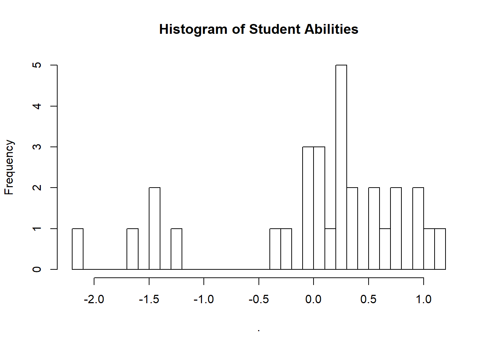

Two Parameter IRT (2PL)
Motivations
The motivation for this model is typically when dealing with survey data it is nice to be able to discriminate between the “student” difficulty (\(\alpha\)), the question difficulty (\(\beta\)) and the discrimination of the questions \(\gamma\).
Data Generating Process
\[P(y_n = 1) = logit^{-1}(\gamma_{kk|n|}(\alpha_{jj|n|} -\beta_{kk|n|}))\]
J <- 30 # Students
K <- 10 # Questions
N <- J * K
alpha <- runif(K, .5, 2) #slopes
beta <- runif(K, -2, 3) # intercepts
theta_mu <- 0 # population mean of person ability
theta_sig <- 1 # population sd of person ability
theta <-rnorm(J, theta_mu, theta_sig) # generate 500 ability parameters
slope.ability <-outer(theta, alpha) # multiply the slope vector by the ability vector
intercept <- matrix(rep(beta, J), nrow = J, byrow = TRUE)
prob <- plogis(intercept + slope.ability) # 1/(1 + exp(.))
data <-ifelse(runif(N) < prob, 1, 0) # generate matrix of Bernoulli 0-1 responsesNow we can format our data.
tidy_data <- data %>%
as_tibble() %>%
mutate(person_id = row_number()) %>%
gather(item, response, -person_id) %>%
mutate(item = as.numeric(as.factor(item)))## Warning: `as_tibble.matrix()` requires a matrix with column names or a `.name_repair` argument. Using compatibility `.name_repair`.
## This warning is displayed once per session.Model
Now we can build our Stan model using this reference.
Stan
writeLines(readLines("stan_2pl.stan"))// 2PL IRT in Stan
// Modified from the Stan Users Guide <https://mc-stan.org/docs/>
data {
int<lower=1> J; // number of students
int<lower=1> K; // number of questions
int<lower=1> N; // number of observations
int<lower=1,upper=J> jj[N]; // student for observation n
int<lower=1,upper=K> kk[N]; // question for observation n
int<lower=0,upper=1> y[N]; // correctness for observation n
}
parameters {
real mu_beta; // mean question difficulty
vector[J] alpha; // ability for j - mean
vector[K] beta; // difficulty for k
vector<lower=0>[K] gamma; // discrimination of k
//real<lower=0> sigma_beta; // scale of difficulties
//real<lower=0> sigma_gamma; // scale of log discrimination
}
model {
alpha ~ std_normal(); // normal(y| 0,1)
//Can make these hierarchical priors if desired
//beta ~ normal(0, sigma_beta);
//gamma ~ lognormal(0, sigma_gamma);
beta ~ normal(0, 5);
gamma ~ lognormal(0, 2);
mu_beta ~ cauchy(0, 5);
//sigma_beta ~ cauchy(0, 5);
//sigma_gamma ~ cauchy(0, 5);
y ~ bernoulli_logit(gamma[kk] .* (alpha[jj] - (beta[kk] + mu_beta)));
}Data Prep
Of course, we need to prepare our data for Stan.
stan_dat <- list(
J = length(unique(tidy_data[["person_id"]])),
K = length(unique(tidy_data[["item"]])),
N = nrow(tidy_data),
jj = tidy_data[["person_id"]],
kk = tidy_data[["item"]],
y = tidy_data[["response"]]
)Modeling
library(rstan)## Loading required package: StanHeaders## rstan (Version 2.18.2, GitRev: 2e1f913d3ca3)## For execution on a local, multicore CPU with excess RAM we recommend calling
## options(mc.cores = parallel::detectCores()).
## To avoid recompilation of unchanged Stan programs, we recommend calling
## rstan_options(auto_write = TRUE)## For improved execution time, we recommend calling
## Sys.setenv(LOCAL_CPPFLAGS = '-march=native')
## although this causes Stan to throw an error on a few processors.##
## Attaching package: 'rstan'## The following object is masked from 'package:tidyr':
##
## extractrstan_options(auto_write = TRUE)
model <- stan_model("stan_2pl.stan")Now we can run our compiled model with our data:
fit_2pl <- sampling(model, stan_dat,
cores = 2, chains = 2, iter = 2000, refresh = 0)## Warning: There were 1897 divergent transitions after warmup. Increasing adapt_delta above 0.8 may help. See
## http://mc-stan.org/misc/warnings.html#divergent-transitions-after-warmup## Warning: There were 39 transitions after warmup that exceeded the maximum treedepth. Increase max_treedepth above 10. See
## http://mc-stan.org/misc/warnings.html#maximum-treedepth-exceeded## Warning: Examine the pairs() plot to diagnose sampling problemsModel Checking
util <- new.env()
source('stan_utilities.R', local=util)util$check_all_diagnostics(fit_2pl)If this were for a more serious application I would also check the pair plot and the traces.
Inferences
First we can look at our question difficulties. If an item has a higher value then it requires a higher level of ability to get it “correct.”
print(fit_2pl, pars = "beta")## Inference for Stan model: stan_2pl.
## 2 chains, each with iter=2000; warmup=1000; thin=1;
## post-warmup draws per chain=1000, total post-warmup draws=2000.
##
## mean se_mean sd 2.5% 25% 50% 75% 98% n_eff Rhat
## beta[1] -0.69 1.00 2.2 -9.1 -1.21 -0.68 -0.16 3.31 5 1.3
## beta[2] -1.38 1.21 1.5 -4.2 -2.32 -1.46 -0.49 2.40 2 2.1
## beta[3] -1.19 0.63 2.3 -5.6 -2.65 -0.94 -0.38 5.26 13 1.3
## beta[4] -5.89 0.38 1.9 -8.9 -7.16 -6.19 -4.72 -1.12 26 1.1
## beta[5] 0.88 0.44 2.3 -3.9 0.08 0.80 1.40 6.71 28 1.0
## beta[6] -0.01 0.83 3.9 -11.0 -1.91 0.05 2.29 8.33 21 1.2
## beta[7] 2.15 0.85 4.0 -5.1 -0.53 2.37 4.98 9.32 22 1.0
## beta[8] -1.70 3.93 5.9 -11.8 -5.74 -2.86 2.56 10.78 2 1.3
## beta[9] -3.01 1.47 2.1 -7.2 -4.09 -3.14 -1.73 0.73 2 1.8
## beta[10] 0.11 0.63 1.2 -1.1 -0.69 -0.24 0.33 3.23 3 1.9
##
## Samples were drawn using NUTS(diag_e) at Thu Jun 20 10:09:27 2019.
## For each parameter, n_eff is a crude measure of effective sample size,
## and Rhat is the potential scale reduction factor on split chains (at
## convergence, Rhat=1).Similarlly we can look at our item \(\gamma\)s to check for discrimination.
print(fit_2pl, pars = "gamma")## Inference for Stan model: stan_2pl.
## 2 chains, each with iter=2000; warmup=1000; thin=1;
## post-warmup draws per chain=1000, total post-warmup draws=2000.
##
## mean se_mean sd 2.5% 25% 50% 75% 98% n_eff
## gamma[1] 1.4e+00 1.9e-01 9.0e-01 0.19 0.98 1.38 1.7e+00 3.6e+00 22
## gamma[2] 1.3e+02 1.2e+02 4.8e+02 0.66 1.35 3.10 1.4e+01 2.0e+03 17
## gamma[3] 5.8e-01 4.2e-01 5.7e-01 0.00 0.00 0.45 1.0e+00 1.9e+00 2
## gamma[4] 2.3e-01 2.0e-02 8.0e-02 0.10 0.17 0.22 2.5e-01 4.4e-01 26
## gamma[5] 1.9e+12 1.9e+12 1.2e+13 0.00 0.00 0.06 2.5e+09 1.6e+13 43
## gamma[6] 0.0e+00 0.0e+00 5.0e-02 0.00 0.00 0.00 0.0e+00 0.0e+00 333
## gamma[7] 0.0e+00 0.0e+00 0.0e+00 0.00 0.00 0.00 0.0e+00 0.0e+00 1574
## gamma[8] 0.0e+00 0.0e+00 1.0e-02 0.00 0.00 0.00 0.0e+00 0.0e+00 79
## gamma[9] 4.7e-01 1.9e-01 3.0e-01 0.24 0.30 0.34 5.5e-01 1.6e+00 2
## gamma[10] 1.4e+05 1.4e+05 3.8e+05 5.90 44.46 158.76 3.6e+03 1.3e+06 7
## Rhat
## gamma[1] 1.1
## gamma[2] 1.1
## gamma[3] 1.7
## gamma[4] 1.1
## gamma[5] 1.0
## gamma[6] 1.0
## gamma[7] 1.0
## gamma[8] 1.0
## gamma[9] 1.4
## gamma[10] 1.4
##
## Samples were drawn using NUTS(diag_e) at Thu Jun 20 10:09:27 2019.
## For each parameter, n_eff is a crude measure of effective sample size,
## and Rhat is the potential scale reduction factor on split chains (at
## convergence, Rhat=1).Summarising with ICC
Now we can pull out some of our valuess and plot the ICCs for the different items.
library(tidybayes)
difficulties <- extract(fit_2pl)["beta"][[1]] %>%
as_tibble() %>%
colMeans()
discrimination <- extract(fit_2pl)["gamma"][[1]] %>%
as_tibble() %>%
colMeans()
instrument <- tibble(difficulties = difficulties, discrimination = discrimination) %>%
mutate(item_id = sprintf("Item %s", 1:length(difficulties)))
ability_range <- seq(-4,4, .05)
probs <- crossing(instrument, ability_range) %>%
rowwise() %>%
mutate(prob = arm::invlogit(discrimination*(ability_range-difficulties)))## Registered S3 methods overwritten by 'lme4':
## method from
## cooks.distance.influence.merMod car
## influence.merMod car
## dfbeta.influence.merMod car
## dfbetas.influence.merMod carAnd now we can look at our ICCs.
probs %>%
ggplot(aes(ability_range, prob, group = item_id, color = item_id))+
geom_line(se = FALSE)+
theme_minimal()## Warning: Ignoring unknown parameters: se
We could also take the time to look at our student abilities.
extract(fit_2pl)["alpha"][[1]] %>%
as_tibble() %>%
colMeans() %>%
hist(breaks = 30, main = "Histogram of Student Abilities")
Research and Methods Resources
me.dewitt.jr@gmail.com
Winston- Salem, NC
Copyright © 2018 Michael DeWitt. All rights reserved.